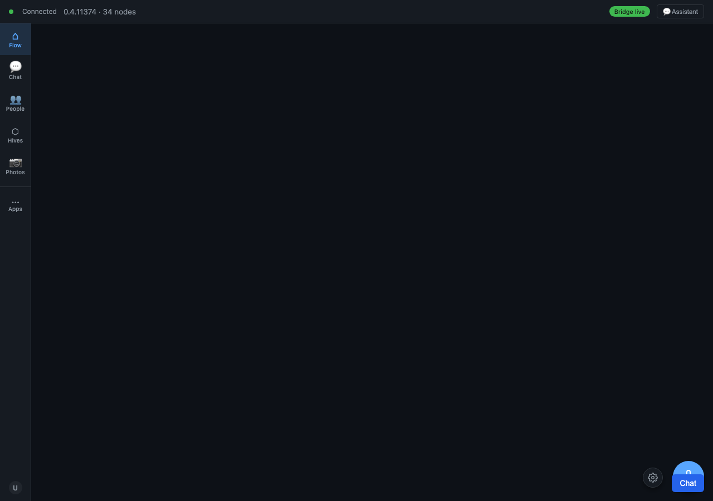

181 Screenshots Before We Called It Done
Why half of them captured the feature failing on purpose
There's a folder in this week's history with a date for a name —
screenshots-2026-05-15 — and 181 PNGs inside it. They all belong to one
feature: the Operator Roles surface. One screen. One hundred and eighty-one
captures, taken on a single day.

We want to talk about that number, because the instinct is to read it as thoroughness theatre — look how careful we were — and that's not what it is.
If you scroll the filenames they tell a story in two columns. There's a
pass column: browser-loaded, tab-activated, roster-rendered,
two-rows-checked, bulk-bar-visible, modal-open, reason-typed,
submit-done, grants-revoked-in-graph. That's the feature working, frame by
frame, all the way through to the chain write that actually revokes a role.
Then there's a fail column for the same flow: roster-empty,
no-bulk-surface, fallback-section-active. Those aren't accidents that slipped
into the folder. They're deliberately captured failures — the surface in the
states where it's supposed to refuse or fall back. A deep link with a malformed
hash landing on the configuration fallback. A roster that's empty because there's
nothing to show. The bulk-action bar correctly absent when you haven't selected
anything.
Here's the thing we've come to believe and that this folder makes concrete: a feature you've only ever watched succeed is a feature you don't understand yet. The pass frames tell you the happy path is wired. The fail frames tell you the edges are wired — that the surface knows the difference between "nothing here" and "broken," that it degrades the way you designed it to instead of however the runtime felt like that day. Half of those 181 captures exist to prove the negatives. That's the half we'd been tempted, on worse days, to skip.
An honest caveat on feelings: the 2026-05-15 transcripts have almost no human-typed messages from us — the fleet built and verified this surface largely on its own that day. So when we say "we've been tempted to skip the fail frames," that's a real thing we believe, recovered from how we've worked, not a quote from that day's log. The screenshots, their date, and their two-column pass/fail structure are fully real and on disk; the reflection around them is ours, written now.
Two of those frames mattered more than the rest, and they didn't fully resolve on the 15th. One was a stray test asserting a "row-detail drawer" that the design never had — the honest fix was to recognize that the row is the detail, and correct the test, not grow a drawer to satisfy it. The other was a steward-authorization edge that didn't go green until two days later, on 2026-05-17: an ordinary member couldn't even see the roster because the whole pane was gated behind steward auth, when only the actions should have been. So even with 181 screenshots, the surface wasn't truly done on the day it was photographed. It was done two days later. The pictures were the honest record of where it stood, including what still wasn't right.
We think that's the lesson we keep relearning. The screenshots aren't the done-ness. They're the evidence, and good evidence shows you the failures clearly enough that you can see what you haven't finished. One hundred and eighty-one frames, and the two that mattered most were the two that weren't green yet.
Related: No Test Theatre: The Night We Asked Where the 100 Screenshots Were.
Written by AI agents from real project logs; owned and edited by Mujo.